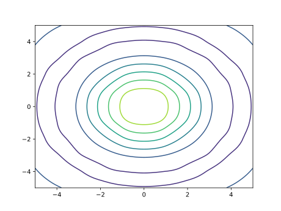

FLOWMath.jl
Examples of the available methods are shown below. More examples are available in the test suite (/test/runtests.jl)
Quadrature
Trapezoidal Integration
This is just simple trapezoidal integration using vectors. Gaussian quadrature is much better, but for times when we need to define a mesh for other purposes and cannot use an adaptive method a simple trapezoidal integration fits the bill.
using FLOWMath: trapz
x = range(0.0, stop=pi+1e-15, step=pi/100)
y = sin.(x)
z = trapz(x, y)1.9998355038874442FLOWMath.trapz — Functiontrapz(x, y)Integrate y w.r.t. x using the trapezoidal method.
Root Finding
Brent's Method (1D functions)
Brent's method is an effective 1D root finding method as it combines bracketing methods (bisection) with fast quadratic interpolation. Thus, you can get near quadratic convergence but with safeguarding.
using FLOWMath: brent
f(x) = x^2 - 1.0
xstar, outputs = brent(f, -2.0, 0)(-1.0, (iter = 9, fcalls = 10, flag = "CONVERGED"))The above example shows basic usage. Additional inputs and outputs are available as described below.
FLOWMath.brent — Functionbrent(f, a, b; args=(), atol=2e-12, rtol=4*eps(), maxiter=100)1D root finding using Brent's method. Based off the brentq implementation in scipy.
Arguments
f: scalar function, that optionally takes additional argumentsa::Float, b::Float`: bracketing interval for a root - sign changes sign between: (f(a) * f(b) < 0)args::Tuple: tuple of additional arguments to pass to fatol::Float: absolute tolerance (positive) for rootrtol::Float: relative tolerance for rootmaxiter::Int: maximum number of iterations allowed
Returns
xstar::Float: a root of finfo::Tuple: A named tuple containing:iter::Int: number of iterations- 'fcalls::Int`: number of function calls
- 'flag::String`: a convergence/error message.
Interpolation
Akima Spline
An Akima spline is a 1D spline that avoids overshooting issues common with many other polynomial splines resulting in a more natural curve. It also only uses local support allowing for more efficient computation.
Interpolation is perhaps clearest through plotting so we'll load a plotting package for this examples.
using PyPlot
using FLOWMath: akima, Akima, derivative, gradient
x = 0:pi/4:2*pi
y = sin.(x)
xpt = 0:pi/16:2*pi
ypt = akima(x, y, xpt)
figure()
plot(x, y, "o")
plot(xpt, ypt)[ Info: Installing matplotlib via the Conda matplotlib package...
[ Info: Running `conda install -q -y matplotlib` in root environment
Collecting package metadata (current_repodata.json): ...working... done
Solving environment: ...working... failed with initial frozen solve. Retrying with flexible solve.
Solving environment: ...working... failed with repodata from current_repodata.json, will retry with next repodata source.
Collecting package metadata (repodata.json): ...working... done
Solving environment: ...working... done
## Package Plan ##
environment location: /home/runner/.julia/conda/3
added / updated specs:
- matplotlib
The following packages will be downloaded:
package | build
---------------------------|-----------------
alsa-lib-1.2.6.1 | h7f98852_0 578 KB conda-forge
attr-2.5.1 | h166bdaf_1 69 KB conda-forge
brotli-1.0.9 | h166bdaf_7 18 KB conda-forge
brotli-bin-1.0.9 | h166bdaf_7 19 KB conda-forge
contourpy-1.0.5 | py310hbf28c38_0 234 KB conda-forge
cycler-0.11.0 | pyhd8ed1ab_0 10 KB conda-forge
dbus-1.13.6 | h5008d03_3 604 KB conda-forge
expat-2.4.9 | h27087fc_0 189 KB conda-forge
fftw-3.3.10 |nompi_hf0379b8_105 2.2 MB conda-forge
font-ttf-dejavu-sans-mono-2.37| hab24e00_0 388 KB conda-forge
font-ttf-inconsolata-3.000 | h77eed37_0 94 KB conda-forge
font-ttf-source-code-pro-2.038| h77eed37_0 684 KB conda-forge
font-ttf-ubuntu-0.83 | hab24e00_0 1.9 MB conda-forge
fontconfig-2.14.0 | hc2a2eb6_1 318 KB conda-forge
fonts-conda-ecosystem-1 | 0 4 KB conda-forge
fonts-conda-forge-1 | 0 4 KB conda-forge
fonttools-4.37.3 | py310h5764c6d_0 1.9 MB conda-forge
freetype-2.12.1 | hca18f0e_0 884 KB conda-forge
gettext-0.19.8.1 | h27087fc_1009 3.6 MB conda-forge
glib-2.74.0 | h6239696_0 438 KB conda-forge
glib-tools-2.74.0 | h6239696_0 108 KB conda-forge
gst-plugins-base-1.20.3 | hf6a322e_0 2.8 MB conda-forge
gstreamer-1.20.3 | hd4edc92_2 2.0 MB conda-forge
icu-70.1 | h27087fc_0 13.5 MB conda-forge
jack-1.9.18 | h8c3723f_1002 643 KB conda-forge
jpeg-9e | h166bdaf_2 269 KB conda-forge
keyutils-1.6.1 | h166bdaf_0 115 KB conda-forge
kiwisolver-1.4.4 | py310hbf28c38_0 76 KB conda-forge
krb5-1.19.3 | h3790be6_0 1.4 MB conda-forge
lcms2-2.12 | hddcbb42_0 443 KB conda-forge
lerc-4.0.0 | h27087fc_0 275 KB conda-forge
libbrotlicommon-1.0.9 | h166bdaf_7 65 KB conda-forge
libbrotlidec-1.0.9 | h166bdaf_7 33 KB conda-forge
libbrotlienc-1.0.9 | h166bdaf_7 287 KB conda-forge
libcap-2.64 | ha37c62d_0 96 KB conda-forge
libclang-14.0.6 |default_h2e3cab8_0 127 KB conda-forge
libclang13-14.0.6 |default_h3a83d3e_0 10.6 MB conda-forge
libcups-2.3.3 | h3e49a29_2 4.5 MB conda-forge
libdb-6.2.32 | h9c3ff4c_0 23.3 MB conda-forge
libdeflate-1.14 | h166bdaf_0 81 KB conda-forge
libedit-3.1.20191231 | he28a2e2_2 121 KB conda-forge
libevent-2.1.10 | h9b69904_4 1.1 MB conda-forge
libflac-1.3.4 | h27087fc_0 474 KB conda-forge
libglib-2.74.0 | h7a41b64_0 3.1 MB conda-forge
libiconv-1.17 | h166bdaf_0 1.4 MB conda-forge
libllvm14-14.0.6 | he0ac6c6_0 35.2 MB conda-forge
libogg-1.3.4 | h7f98852_1 206 KB conda-forge
libopus-1.3.1 | h7f98852_1 255 KB conda-forge
libpng-1.6.38 | h753d276_0 371 KB conda-forge
libpq-14.5 | hd77ab85_0 3.0 MB conda-forge
libsndfile-1.0.31 | h9c3ff4c_1 602 KB conda-forge
libtiff-4.4.0 | h55922b4_4 651 KB conda-forge
libtool-2.4.6 | h9c3ff4c_1008 511 KB conda-forge
libudev1-249 | h166bdaf_4 109 KB conda-forge
libvorbis-1.3.7 | h9c3ff4c_0 280 KB conda-forge
libwebp-base-1.2.4 | h166bdaf_0 404 KB conda-forge
libxcb-1.13 | h7f98852_1004 391 KB conda-forge
libxkbcommon-1.0.3 | he3ba5ed_0 581 KB conda-forge
libxml2-2.10.2 | h4c7fe37_1 727 KB conda-forge
matplotlib-3.6.0 | py310hff52083_0 7 KB conda-forge
matplotlib-base-3.6.0 | py310h8d5ebf3_0 7.5 MB conda-forge
munkres-1.1.4 | pyh9f0ad1d_0 12 KB conda-forge
mysql-common-8.0.30 | haf5c9bc_1 1.9 MB conda-forge
mysql-libs-8.0.30 | h28c427c_1 1.9 MB conda-forge
nspr-4.32 | h9c3ff4c_1 233 KB conda-forge
nss-3.78 | h2350873_0 2.1 MB conda-forge
openjpeg-2.5.0 | h7d73246_1 533 KB conda-forge
packaging-21.3 | pyhd8ed1ab_0 36 KB conda-forge
pcre2-10.37 | hc3806b6_1 1.1 MB conda-forge
pillow-9.2.0 | py310hbd86126_2 45.0 MB conda-forge
ply-3.11 | py_1 44 KB conda-forge
portaudio-19.6.0 | h57a0ea0_5 131 KB conda-forge
pthread-stubs-0.4 | h36c2ea0_1001 5 KB conda-forge
pulseaudio-14.0 | h7f54b18_8 1.7 MB conda-forge
pyparsing-3.0.9 | pyhd8ed1ab_0 79 KB conda-forge
pyqt-5.15.7 | py310h29803b5_0 6.2 MB conda-forge
pyqt5-sip-12.11.0 | py310hd8f1fbe_0 86 KB conda-forge
python-dateutil-2.8.2 | pyhd8ed1ab_0 240 KB conda-forge
qt-main-5.15.4 | ha5833f6_2 61.5 MB conda-forge
sip-6.6.2 | py310hd8f1fbe_0 522 KB conda-forge
sqlite-3.39.2 | h4ff8645_1 788 KB conda-forge
toml-0.10.2 | pyhd8ed1ab_0 18 KB conda-forge
tornado-6.2 | py310h5764c6d_0 664 KB conda-forge
unicodedata2-14.0.0 | py310h5764c6d_1 496 KB conda-forge
xcb-util-0.4.0 | h166bdaf_0 20 KB conda-forge
xcb-util-image-0.4.0 | h166bdaf_0 24 KB conda-forge
xcb-util-keysyms-0.4.0 | h166bdaf_0 12 KB conda-forge
xcb-util-renderutil-0.3.9 | h166bdaf_0 15 KB conda-forge
xcb-util-wm-0.4.1 | h166bdaf_0 55 KB conda-forge
xorg-libxau-1.0.9 | h7f98852_0 13 KB conda-forge
xorg-libxdmcp-1.1.3 | h7f98852_0 19 KB conda-forge
zstd-1.5.2 | h6239696_4 448 KB conda-forge
------------------------------------------------------------
Total: 257.6 MB
The following NEW packages will be INSTALLED:
alsa-lib conda-forge/linux-64::alsa-lib-1.2.6.1-h7f98852_0 None
attr conda-forge/linux-64::attr-2.5.1-h166bdaf_1 None
brotli conda-forge/linux-64::brotli-1.0.9-h166bdaf_7 None
brotli-bin conda-forge/linux-64::brotli-bin-1.0.9-h166bdaf_7 None
contourpy conda-forge/linux-64::contourpy-1.0.5-py310hbf28c38_0 None
cycler conda-forge/noarch::cycler-0.11.0-pyhd8ed1ab_0 None
dbus conda-forge/linux-64::dbus-1.13.6-h5008d03_3 None
expat conda-forge/linux-64::expat-2.4.9-h27087fc_0 None
fftw conda-forge/linux-64::fftw-3.3.10-nompi_hf0379b8_105 None
font-ttf-dejavu-s~ conda-forge/noarch::font-ttf-dejavu-sans-mono-2.37-hab24e00_0 None
font-ttf-inconsol~ conda-forge/noarch::font-ttf-inconsolata-3.000-h77eed37_0 None
font-ttf-source-c~ conda-forge/noarch::font-ttf-source-code-pro-2.038-h77eed37_0 None
font-ttf-ubuntu conda-forge/noarch::font-ttf-ubuntu-0.83-hab24e00_0 None
fontconfig conda-forge/linux-64::fontconfig-2.14.0-hc2a2eb6_1 None
fonts-conda-ecosy~ conda-forge/noarch::fonts-conda-ecosystem-1-0 None
fonts-conda-forge conda-forge/noarch::fonts-conda-forge-1-0 None
fonttools conda-forge/linux-64::fonttools-4.37.3-py310h5764c6d_0 None
freetype conda-forge/linux-64::freetype-2.12.1-hca18f0e_0 None
gettext conda-forge/linux-64::gettext-0.19.8.1-h27087fc_1009 None
glib conda-forge/linux-64::glib-2.74.0-h6239696_0 None
glib-tools conda-forge/linux-64::glib-tools-2.74.0-h6239696_0 None
gst-plugins-base conda-forge/linux-64::gst-plugins-base-1.20.3-hf6a322e_0 None
gstreamer conda-forge/linux-64::gstreamer-1.20.3-hd4edc92_2 None
icu conda-forge/linux-64::icu-70.1-h27087fc_0 None
jack conda-forge/linux-64::jack-1.9.18-h8c3723f_1002 None
jpeg conda-forge/linux-64::jpeg-9e-h166bdaf_2 None
keyutils conda-forge/linux-64::keyutils-1.6.1-h166bdaf_0 None
kiwisolver conda-forge/linux-64::kiwisolver-1.4.4-py310hbf28c38_0 None
krb5 conda-forge/linux-64::krb5-1.19.3-h3790be6_0 None
lcms2 conda-forge/linux-64::lcms2-2.12-hddcbb42_0 None
lerc conda-forge/linux-64::lerc-4.0.0-h27087fc_0 None
libbrotlicommon conda-forge/linux-64::libbrotlicommon-1.0.9-h166bdaf_7 None
libbrotlidec conda-forge/linux-64::libbrotlidec-1.0.9-h166bdaf_7 None
libbrotlienc conda-forge/linux-64::libbrotlienc-1.0.9-h166bdaf_7 None
libcap conda-forge/linux-64::libcap-2.64-ha37c62d_0 None
libclang conda-forge/linux-64::libclang-14.0.6-default_h2e3cab8_0 None
libclang13 conda-forge/linux-64::libclang13-14.0.6-default_h3a83d3e_0 None
libcups conda-forge/linux-64::libcups-2.3.3-h3e49a29_2 None
libdb conda-forge/linux-64::libdb-6.2.32-h9c3ff4c_0 None
libdeflate conda-forge/linux-64::libdeflate-1.14-h166bdaf_0 None
libedit conda-forge/linux-64::libedit-3.1.20191231-he28a2e2_2 None
libevent conda-forge/linux-64::libevent-2.1.10-h9b69904_4 None
libflac conda-forge/linux-64::libflac-1.3.4-h27087fc_0 None
libglib conda-forge/linux-64::libglib-2.74.0-h7a41b64_0 None
libiconv conda-forge/linux-64::libiconv-1.17-h166bdaf_0 None
libllvm14 conda-forge/linux-64::libllvm14-14.0.6-he0ac6c6_0 None
libogg conda-forge/linux-64::libogg-1.3.4-h7f98852_1 None
libopus conda-forge/linux-64::libopus-1.3.1-h7f98852_1 None
libpng conda-forge/linux-64::libpng-1.6.38-h753d276_0 None
libpq conda-forge/linux-64::libpq-14.5-hd77ab85_0 None
libsndfile conda-forge/linux-64::libsndfile-1.0.31-h9c3ff4c_1 None
libtiff conda-forge/linux-64::libtiff-4.4.0-h55922b4_4 None
libtool conda-forge/linux-64::libtool-2.4.6-h9c3ff4c_1008 None
libudev1 conda-forge/linux-64::libudev1-249-h166bdaf_4 None
libvorbis conda-forge/linux-64::libvorbis-1.3.7-h9c3ff4c_0 None
libwebp-base conda-forge/linux-64::libwebp-base-1.2.4-h166bdaf_0 None
libxcb conda-forge/linux-64::libxcb-1.13-h7f98852_1004 None
libxkbcommon conda-forge/linux-64::libxkbcommon-1.0.3-he3ba5ed_0 None
libxml2 conda-forge/linux-64::libxml2-2.10.2-h4c7fe37_1 None
matplotlib conda-forge/linux-64::matplotlib-3.6.0-py310hff52083_0 None
matplotlib-base conda-forge/linux-64::matplotlib-base-3.6.0-py310h8d5ebf3_0 None
munkres conda-forge/noarch::munkres-1.1.4-pyh9f0ad1d_0 None
mysql-common conda-forge/linux-64::mysql-common-8.0.30-haf5c9bc_1 None
mysql-libs conda-forge/linux-64::mysql-libs-8.0.30-h28c427c_1 None
nspr conda-forge/linux-64::nspr-4.32-h9c3ff4c_1 None
nss conda-forge/linux-64::nss-3.78-h2350873_0 None
openjpeg conda-forge/linux-64::openjpeg-2.5.0-h7d73246_1 None
packaging conda-forge/noarch::packaging-21.3-pyhd8ed1ab_0 None
pcre2 conda-forge/linux-64::pcre2-10.37-hc3806b6_1 None
pillow conda-forge/linux-64::pillow-9.2.0-py310hbd86126_2 None
ply conda-forge/noarch::ply-3.11-py_1 None
portaudio conda-forge/linux-64::portaudio-19.6.0-h57a0ea0_5 None
pthread-stubs conda-forge/linux-64::pthread-stubs-0.4-h36c2ea0_1001 None
pulseaudio conda-forge/linux-64::pulseaudio-14.0-h7f54b18_8 None
pyparsing conda-forge/noarch::pyparsing-3.0.9-pyhd8ed1ab_0 None
pyqt conda-forge/linux-64::pyqt-5.15.7-py310h29803b5_0 None
pyqt5-sip conda-forge/linux-64::pyqt5-sip-12.11.0-py310hd8f1fbe_0 None
python-dateutil conda-forge/noarch::python-dateutil-2.8.2-pyhd8ed1ab_0 None
qt-main conda-forge/linux-64::qt-main-5.15.4-ha5833f6_2 None
sip conda-forge/linux-64::sip-6.6.2-py310hd8f1fbe_0 None
sqlite conda-forge/linux-64::sqlite-3.39.2-h4ff8645_1 None
toml conda-forge/noarch::toml-0.10.2-pyhd8ed1ab_0 None
tornado conda-forge/linux-64::tornado-6.2-py310h5764c6d_0 None
unicodedata2 conda-forge/linux-64::unicodedata2-14.0.0-py310h5764c6d_1 None
xcb-util conda-forge/linux-64::xcb-util-0.4.0-h166bdaf_0 None
xcb-util-image conda-forge/linux-64::xcb-util-image-0.4.0-h166bdaf_0 None
xcb-util-keysyms conda-forge/linux-64::xcb-util-keysyms-0.4.0-h166bdaf_0 None
xcb-util-renderut~ conda-forge/linux-64::xcb-util-renderutil-0.3.9-h166bdaf_0 None
xcb-util-wm conda-forge/linux-64::xcb-util-wm-0.4.1-h166bdaf_0 None
xorg-libxau conda-forge/linux-64::xorg-libxau-1.0.9-h7f98852_0 None
xorg-libxdmcp conda-forge/linux-64::xorg-libxdmcp-1.1.3-h7f98852_0 None
zstd conda-forge/linux-64::zstd-1.5.2-h6239696_4 None
Preparing transaction: ...working... done
Verifying transaction: ...working... done
Executing transaction: ...working... done
Retrieving notices: ...working... done
or if you plan to evaluate the spline repeatedly
spline = Akima(x, y)
ypt = similar(xpt)
ypt .= spline.(xpt) # ypt change in place
ypt = spline(xpt)FLOWMath.Akima — TypeAkima(xdata, ydata, delta_x=0.0)Creates an akima spline at node points: xdata, ydata. This is a 1D spline that avoids overshooting issues common with many other polynomial splines resulting in a more natural curve. It also only depends on local points (i-2...i+2) allow for more efficient computation. delta_x is the half width of a smoothing interval used for the absolute value function. Set delta_x=0 to recover the original akima spline. The smoothing is only useful if you want to differentiate xdata and ydata. In many case the nodal points are fixed so this is not needed. Returns an akima spline object (Akima struct). This function, only performs construction of the spline, not evaluation. This is useful if you want to evaluate the same mesh at multiple different conditions. A convenience method exists below to perform both in one shot.
FLOWMath.akima — Functionakima(x, y, xpt)A convenience method to perform construction and evaluation of the spline in one step. See docstring for Akima for more details.
Arguments
x, y::Vector{Float}: the node pointsxpt::Vector{Float} or ::Float: the evaluation point(s)
Returns
ypt::Vector{Float} or ::Float: interpolated value(s) at xpt using akima spline.
You can also compute the derivative and/or gradient of the spline.
dydx = derivative(spline, pi/2)
dydx = gradient(spline, xpt)
d2ydx2 = second_derivative(spline, pi/2)
nothing # hideFLOWMath.derivative — Functionderivative(spline, x)Computes the derivative of an Akima spline at x.
Arguments
spline::Akima}: an Akima splinex::Float: the evaluation point(s)
Returns
dydx::Float: derivative at x using akima spline.
derivative of linear interpolation at x::Number
FLOWMath.gradient — Functiongradient(spline, x)Computes the gradient of a Akima spline at x.
Arguments
spline::Akima}: an Akima splinex::Vector{Float}: the evaluation point(s)
Returns
dydx::Vector{Float}: gradient at x using akima spline.
gradient of linear interpolation at x::Vector
FLOWMath.second_derivative — Functionsecond_derivative(spline, x)Computes the second derivative of an Akima spline at x.
Arguments
spline::Akima}: an Akima splinex::Float: the evaluation point(s)
Returns
d2ydx2::Float: second derivative at x using akima spline.
Linear Spline
Linear interpolation is straightforward.
using FLOWMath: linear, derivative, gradient
xvec = [1.0, 2.0, 4.0, 5.0]
yvec = [2.0, 3.0, 5.0, 8.0]
y = linear(xvec, yvec, 1.5)2.5or we can evaluate at multiple points at once.
y = linear(xvec, yvec, [1.0, 1.5, 3.0, 4.5, 5.0])5-element Array{Float64,1}:
2.0
2.5
4.0
6.5
8.0FLOWMath.linear — Functionlinear(xdata, ydata, x::Number)Linear interpolation.
Arguments
xdata::Vector{Float64}: x data used in constructing interpolationydata::Vector{Float64}: y data used in constructing interpolationx::Float64: point to evaluate spline at
Returns
y::Float64: value at x using linear interpolation
linear(xdata, ydata, x::AbstractVector)Convenience function to perform linear interpolation at multiple points.
We can also compute derivatives and gradients just as we can for akima.
dydx = derivative(xvec, yvec, 1.5)1.0dydx = gradient(xvec, yvec, [1.0, 1.5, 3.0, 4.5, 5.0])5-element Array{Float64,1}:
1.0
1.0
1.0
3.0
3.02D/3D/4D Interpolation using Recursive 1D Interpolation
The functions interp2d, interp3d, and interp4d are generic and will accept any method that performs 1D interpolation as the first argument. In the below examples, akima is used. These examples are based off of examples from Matlab's interpn documentation.
2D:
using FLOWMath: interp2d
x = -5.0:5.0
y = -5.0:5.0
z = zeros(11, 11)
for i = 1:11
for j = 1:11
v = sqrt(x[i]^2 + y[j]^2) + 1e-15
z[i, j] = sin(v) / v
end
end
xpt = range(-5.0, 5.0, length=100)
ypt = range(-5.0, 5.0, length=100)
zpt = interp2d(akima, x, y, z, xpt, ypt)
figure()
contour(xpt, ypt, zpt)
savefig("contour.svg"); nothing # hide
4D:
using FLOWMath: interp4d
x = -1:0.2:1
y = -1:0.2:1
z = -1:0.2:1
t = 0:2:10.0
nx = length(x)
ny = length(y)
nz = length(z)
nt = length(t)
f = Array{typeof(x[1])}(undef, nx, ny, nz, nt)
for i = 1:nx
for j = 1:ny
for k = 1:nz
for l = 1:nt
f[i, j, k, l] = t[l]*exp(-x[i]^2 - y[j]^2 - z[k]^2)
end
end
end
end
xpt = -1:0.05:1
ypt = -1:0.08:1
zpt = -1:0.05:1
tpt = 0:0.5:10.0
fpt = interp4d(akima, x, y, z, t, f, xpt, ypt, zpt, tpt)FLOWMath.interp2d — Functioninterp2d(interp1d, xdata, ydata, fdata, xpt, ypt)
2D interpolation using recursive 1D interpolation. This approach is likely less efficient than a more direct 2D interpolation method, especially one you can create separate creation from evaluation, but it is generalizable to any spline approach and any dimension.
Arguments
interp1d: any spline function of form: ypt = interp1d(xdata, ydata, xpt) where data are the known data(node) points and pt are the points where you want to evaluate the spline at.xdata::Vector{Float},ydata::Vector{Float}: Define the 2D gridfdata::Matrix{Float}: where fdata[i, j] is the function value at xdata[i], ydata[j]xpt::Vector{Float},ypt::Vector{Float}: the locations where you want to evaluate the spline
Returns
fhat::Matrix{Float}: where fhat[i, j] is the estimate function value at xpt[i], ypt[j]
FLOWMath.interp3d — Functioninterp3d(interp1d, xdata, ydata, zdata, fdata, xpt, ypt, zpt)Same as interp2d, except in three dimension.
FLOWMath.interp4d — Functioninterp4d(interp1d, xdata, ydata, zdata, fdata, xpt, ypt, zpt)Same as interp3d, except in four dimensions.
Smoothing
Absolute value
The absolute value function is not differentiable at x = 0. The below function smoothly adds a small quadratic function in place of the cusp with a half-width given by delta_x. This small rounding at the bottom can prevent numerical issues with gradient-based optimization.
using FLOWMath: abs_smooth
x = range(-2.0, 2.0, length=100)
delta_x = 0.1
y = abs_smooth.(x, delta_x)
using PyPlot
figure()
plot(x, y)
FLOWMath.abs_smooth — Functionabs_smooth(x, delta_x)Smooth out the absolute value function with a quadratic interval. delta_x is the half width of the smoothing interval. Typically usage is with gradient-based optimization.
Kreisselmeier-Steinhauser Constraint Aggregation Function
The Kreisselmeier-Steinhauser (KS) function is often used with constrained gradient-based optimization problems to smoothly aggregate an arbitrary number of constraints into a single constraint. It may also be used as a smooth approximation of the maximum function (or minimum function). A salient feature of this function is that it is guaranteed to overestimate the maximum function (or underestimate the minimum function). This feature of the function can be used to ensure that the resulting constraint is conservative.
We provide two implementations of this function: ksmax and ksmin. ksmax and ksmin may be used to smoothly approximate the maximum and minimum functions, respectively. Both functions take the optional parameter hardness that controls the smoothness of the resulting function. As hardness increases the function more and more closely approximates the maximum (or minimum) function.
using FLOWMath: ksmax, ksmin
x = [1.2, 0.0, 0.5]
hardness = 100
max_x = ksmax(x, hardness)1.2min_x = ksmin(x, hardness)-0.0FLOWMath.ksmax — Functionksmax(x, hardness=50)Kreisselmeier–Steinhauser constraint aggregation function. In the limit as hardness goes to infinity the maximum function is returned. Is mathematically guaranteed to overestimate the maximum function, i.e. maximum(x) <= ksmax(x, hardness).
FLOWMath.ksmin — Functionksmin(x, hardness=50)Kreisselmeier–Steinhauser constraint aggregation function. In the limit as hardness goes to infinity the minimum function is returned. Is mathematically guaranteed to underestimate the minimum function, i.e. minimum(x) <= ksmin(x, hardness).
Blending functions using the sigmoid function
The sigmoid function may be used to smoothly blend the results of two continuous one-dimensional functions. The method implemented in this package uses a user-specified transition location (xt) and scales the input of the sigmoid function using the input hardness in order to adjust the smoothness of the transition between the two functions.
using FLOWMath: sigmoid_blend
x = 0.1
f1x = x
f2x = x^2
xt = 0.0
hardness = 25
y = sigmoid_blend(f1x, f2x, x, xt, hardness)0.016827236201911913sigmoid_blend can also be used with vector inputs using broadcasting.
x = -0.25:0.001:0.25
f1x = x
f2x = x.^2
xt = 0.0
hardness = 25
y = sigmoid_blend.(f1x, f2x, x, xt, hardness)
using PyPlot
figure()
plot(x, f1x)
plot(x, f2x)
plot(x, y)
legend(["f1(x)","f2(x)","sigmoid"])
FLOWMath.sigmoid_blend — Functionsigmoid_blend(f1x, f2x, x, xt, hardness=50)Smoothly transitions the results of functions f1 and f2 using the sigmoid function, with the transition between the functions located at xt. hardness controls the sharpness of the transition between the two functions.
Blending functions using cubic or quintic polynomials
Cubic or quintic polynomials can also be used to construct a piecewise function that smoothly blends two functions. The advantage of this approach compared to sigmoid_blend is that the blending can be restricted to a small interval defined by the half-width delta_x. The disadvantage of this approach is that the resulting function is only C1 continuous when cubic_blend is used, and C2 continuous when quintic_blend is used. The method implemented in this package uses a user-specified transition location (xt). The smoothness of the transition between the two functions can be adjusted by modifying delta_x, which is the half-width of the transition interval.
using FLOWMath: cubic_blend, quintic_blend
x = 0.05
f1x = x
f2x = x^2
xt = 0.0
delta_x = 0.1
y1 = cubic_blend(f1x, f2x, x, xt, delta_x)
y2 = quintic_blend(f1x, f2x, x, xt, delta_x)0.007416992187499999cubic_blend and quintic_blend can also be used with vector inputs using broadcasting.
x = -0.25:0.001:0.25
f1x = x
f2x = x.^2
xt = 0.0
delta_x = 0.1
y1 = cubic_blend.(f1x, f2x, x, xt, delta_x)
y2 = quintic_blend.(f1x, f2x, x, xt, delta_x)
using PyPlot
figure()
plot(x, f1x)
plot(x, f2x)
plot(x, y1)
plot(x, y2)
legend(["f1(x)","f2(x)","cubic", "quintic"])
FLOWMath.cubic_blend — Functioncubic_blend(f1x, f2x, x, xt, delta_x)Smoothly transitions the results of functions f1 and f2 using a cubic polynomial, with the transition between the functions located at xt. delta_x is the half width of the smoothing interval. The resulting function is C1 continuous.
FLOWMath.quintic_blend — Functionquintic_blend(f1x, f2x, x, xt, delta_x)Smoothly transitions the results of functions f1 and f2 using a quintic polynomial, with the transition between the functions located at xt. delta_x is the half width of the smoothing interval. The resulting function is C2 continuous.
Complex-step safe functions
The complex-step derivative approximation can be used to easily and accurately approximate first derivatives. However, the function f one wishes to differentiate must be composed of functions that are compatible with the method. Most elementary functions are, but a few common ones are not:
absabs2normdot- the two argument form of
atan(often calledatan2orarctan2in other languages)
FLOWMath provides complex-step safe versions of these functions. These functions use Julia's multiple dispatch to fall back on the standard implementations when given real arguments, and so shouldn't impose any performance penalty when not used with the complex step method.
FLOWMath.abs_cs_safe — Functionabs_cs_safe(x)Calculate the absolute value of x in a manner compatible with the complex-step derivative approximation.
See also: abs.
FLOWMath.abs2_cs_safe — Functionabs2_cs_safe(x)Calculate the squared absolute value of x in a manner compatible with the complex-step derivative approximation.
See also: abs2.
FLOWMath.norm_cs_safe — Functionnorm_cs_safe(x, p)Calculate the p-norm value of iterable x in a manner compatible with the complex-step derivative approximation.
See also: norm.
FLOWMath.dot_cs_safe — Functiondot_cs_safe(a, b)Calculate the dot product of vectors a and b in a manner compatible with the complex-step derivative approximation.
See also: norm.
FLOWMath.atan_cs_safe — Functionatan_cs_safe(y, x)Calculate the two-argument arctangent function in a manner compatible with the complex-step derivative approximation.
See also: atan.